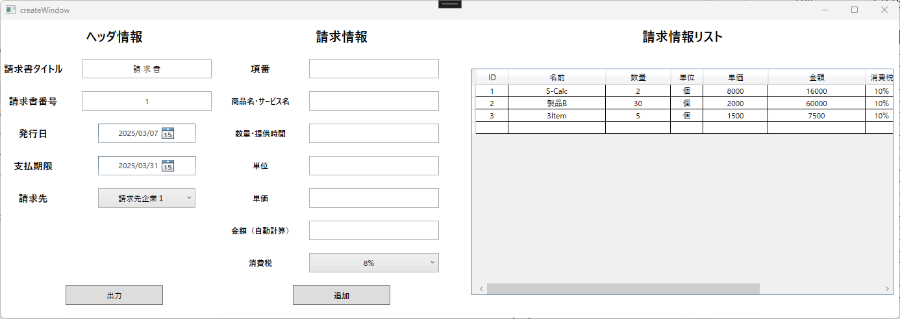
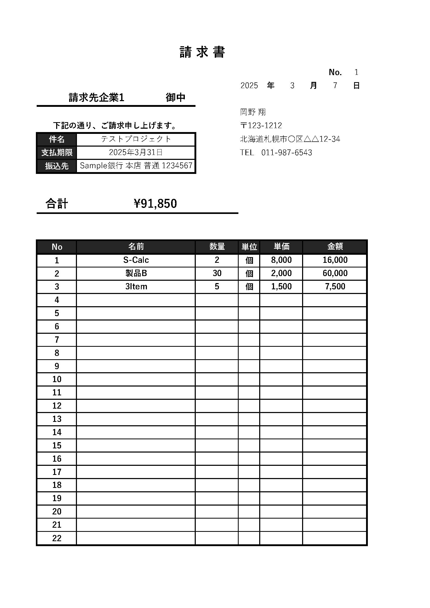

Development
あなたの業務、もっと効率化しませんか？
私は、業務用Windowsソフト開発（WPF）と、ホームページ制作を承っています。
業務の自動化・データ管理が出来るWPFソフト開発
事業のオンライン展開を支援する 静的ホームページ制作
案件例
1.WPF（Windows Presentation Foundation）を使った業務ソフト開発
個人事業主・企業向けの業務効率化を目的としたWindowsソフトの開発を承ります。
業務の自動化・データ管理をスムーズにし、作業負担を軽減するソフトを提供いたします。
開発可能なソフト例
１．帳票作成・管理ソフト
概要：請求書や報告書などの帳票を作成・管理し、Excelエクスポートに対応。
主な機能：
帳票の一覧表示・検索機能（DataGridを使用）
帳票作成・編集・削除機能
帳票のプレビュー表示（印刷イメージの確認）
PDF・Excelエクスポート機能
利用想定：営業報告書、会計帳票、請求書の作成など


２．データ管理ソフト
概要：在庫管理、顧客データ、研究データなどをデジタル化し、検索・管理を効率化。
主な機能：
データの一覧表示（DataGridを使用）
検索・フィルタリング機能
データの新規登録・編集・削除
CSV/Excelのインポート・エクスポート
データの履歴管理
利用想定：商品在庫管理、顧客情報管理、設備管理システム
現在、サンプル画面を準備中です。近日中に公開予定！
2.静的ホームページの開発・保守
個人事業主・中小企業向けに、シンプルで管理しやすい静的サイトを提供します。
スマホ対応・SEO対策を考慮し、事業のオンラインプレゼンスを向上させます。
制作可能なサイト例
１．企業ホームページ
概要：会社概要・サービス紹介・問い合わせフォーム付の基本的な企業HP。
主な構成：
トップページ（事業内容の紹介）
会社概要・サービスページ
お問い合わせフォーム（相談可能）
レスポンシブ対応（PC・スマホ）
利用想定：中小企業、個人事業主、士業
２．ランディングページ
概要：特定のサービスや商品の販促用の1ページ構成のサイト
主な構成：
商品・サービスの詳細説明
ユーザの声・導入事例
CTA（Call To Action：問い合わせボタン・申し込みフォーム）
利用想定：新商品の販売促進、イベントの案内ページ
３．個人・店舗向けサイト
概要：飲食店・美容院・クリニックなど、ローカルビジネス向けのサイト
主な構成：
営業時間・メニュー・予約案内ページ
SNSリンク設置
Googleマップ埋込
利用想定：個人経営の店舗、ローカルビジネス
サポート内容
制作のみ or 制作 ＋ 管理（月額 10,000～）
サイトの定期メンテナンス対応（オプション）
既存サイトの改修・リニューアル対応
問い合わせについて
Windowsソフト開発：単月80万円～（案件の規模により変動）
ヒアリングを行い、ご予算に合わせた最適なプランをご提案いたします。
静的ホームページ制作：案件ごとにお見積り（要相談）
まずはヒアリングのうえ、最適なプランをご提案いたします。
お問い合わせフォームはこちらをクリック